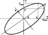
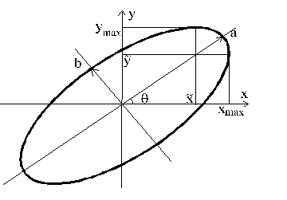

The View 4D menu provides a view of lattice properties with coupled vertical and horizontal beam motion.
Updates values in 4D block (see XY coupled lattice treatment and 4D Beta-functions block).
Closes the lattice for X-Y coupled case (finds the periodic solution for beta-functions and dispersions). If program can close the lattice it rewrites initial Twiss parameters in 4D Beta-functions block of the main window.
Plots 4D beta functions with initial values taken from 4D Beta-functions block of the main window (see also Graphical Window and XY coupled lattice treatment).
Plots the horizontal and vertical dispersion functions with initial values from 4D Beta-functions block of the main window (see also Graphical Window).
Plots the large and small semi-axes of the beam size ellipsoid (a, b) and the ellipsoid tilt angle q. Initial values of beta-functions and emittances are taken from 4D Beta-functions block of the main window (see also View 4D|Size projections).

Plots the projections of beam ellipsoid into horizontal and vertical planes and the parameter $\alpha_{xy}$ describing the
beam ellipse orientation in accordance with the following formula:
$$
\alpha_{xy} = \frac{ \tilde{y}}{ y_{\hbox{max}} } = \frac{ \tilde{x}}{ x_{\hbox{max}} }
$$
Here the beam projections, $x_{\hbox{max}}$ and $y_{\hbox{max}}$, and corresponding them auxiliary coordinates are chosen
as shown in the figure below

For $\alpha_{xy} = 0$ the main ellipse axes coincide with the coordinate frame axes. For $\alpha_{xy} = \pm 1$ the ellipse is transformed into a straight line. The corresponding ellipse equation is
$$ \frac{x^2}{x^2_{\hbox{max}}} - 2 \tilde{\alpha} \frac{xy}{x_{\hbox{max}}y_{\hbox{max}}} + \frac{y^2}{y^2_{\hbox{max}}} = 1 - \tilde{\alpha}^2 $$ while the ellipse half-axes and tilt are determined by following equations: $$ a = \frac{\sqrt{2(1-\tilde{\alpha}^2)} x_{\hbox{max}}y_{\hbox{max}}}{x^2_{\hbox{max}} + y^2_{\hbox{max}} + \sqrt{ (x^2_{\hbox{max}} - y^2_{\hbox{max}}})^2 + 4 \tilde{\alpha}^2 x^2_{\hbox{max}} y^2_{\hbox{max}} } $$ $$ b = \frac{\sqrt{2(1-\tilde{\alpha}^2)} x_{\hbox{max}}y_{\hbox{max}}}{x^2_{\hbox{max}} + y^2_{\hbox{max}} + \sqrt{ (x^2_{\hbox{max}} - y^2_{\hbox{max}}})^2 + 4 \tilde{\alpha}^2 x^2_{\hbox{max}} y^2_{\hbox{max}} } $$ $$ \phi = \arctan{\left[ \frac{2\tilde{\alpha}^2x_{\hbox{max}}y_{\hbox{max}}}{x^2_{\hbox{max}} - y^2_{\hbox{max}}}\right]} $$ Initial values of beta-functions and emittances are taken from 4D Beta-functions block of the main window.Plots the 4D betatron phases with initial values from 4D Beta-functions block of the main window (see also Graphical Window and XY coupled lattice treatment).
Prints 4D Twiss parameters into the text window. Filter allows one to leave the desired elements in the list (See Filtering). Negative or zero step causes an output at the ends of elements only. If you need you can print functions only for elements in the range from Start from Element to Stop at element. Zero for these parameters means the entire range of output.
Prints the 4D beta-functions and dispersions at given element into the 4D text window. The element number is determined in a popped-up dialog box. Zero or negative number denotes the lattice end.
Brings up a dialog box with a check box which controls updating of beta-functions for X-Y coupled motion. If the box is checked, then before every calculation the values in 4D block (see XY coupled lattice treatment and 4D Beta-functions block) is updated. Otherwise parameters Nu_1, Nu_2 and U are chosen so that of four possible choices for the parameters the parameter Nu_1 would be closest to its value in the main window. If necessary they can be updated (calculated) using (Update 4D betas menu).